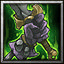
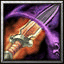

- 主要屬性 靈活
攻擊範圍 400
- 基礎護甲 6
基礎攻速 1.8
- 基礎攻擊 127 - 143
基礎跑速 300
織田家臣出身近江甲賀郡的忍者世家，大約是信長繼任家督前後，做為織田家臣的一員。在不注重門第觀念的信長麾下瀧川一益以其卓越的才幹迅速發跡，很快地便已與尾張出身的織田老臣柴田勝家、佐久間信盛等人齊名，永祿十年二月，瀧川一益受信長之命身任總大將指揮對北伊勢的侵略行動員，成功拿下員弁和桑名兩郡，此後一益就被派駐在伊勢做為織田家攻奪伊勢的先行官。被世人稱譽"進與退皆看瀧川"的猛將，意指在軍隊前進時以狡智勇猛兼備的一益為先鋒必無往不利，而後撤時只要有一益死戰力挺全軍必能安穩退走。
-

-
--忍術．幽魄刀
-
--
-
--
攻擊時有20%機率造成(2.0/2.3/2.6/2.9)倍的傷害。
此技能於習得「忍法．幽魄刀」自動領悟
-
W忍法．怨靈飛翔斬
-
80
-
5
怨靈飛翔斬擊中了敵人，短時間內將可以再使用一次。
當「怨靈飛翔斬」後觸發，可於5秒內再次施展「怨靈飛翔斬」。
-
W忍法．怨靈飛翔斬
-
100/120/140/160
-
12/11/10/9
召附亡靈之怨，對著指定的地點飛斬而去，區域內的敵人將會受到(150/250/350/450)傷害並且暈眩(0.5/0.8/1.1/1.4)秒 ，若是落地有傷害到任何敵方單位，則短時間內可以再額外獲得一次使用怨靈飛翔斬的能力。
冷卻時間隨技能等級提升降低
-
E忍法．魂
-
80/80/80/80
-
20/18/16/14
指定目標敵軍，每秒對該敵軍造成(60/95/130/160)傷害，並治療自己，傷害量等同自身所失去生命值的15%，持續6秒或是直到該敵軍遠離850距離為止。
冷卻時間隨技能等級提升降低
-

-
R忍術．幽魄刀
-
120/140/160/180
-
12
(被動)攻擊時有20%機率造成(2.0/2.3/2.6/2.9)倍的傷害。(啟動)將一個生物轉化為虛空狀態，在虛空狀態下將無法被一般攻擊所傷，但也無法進行攻擊，並且減緩50%移動速度，受到魔法傷害時為1.33倍，持續(2/3/4/5)秒。
-

-
T忍法密傳．修羅吞世刀
-
185/150/125
-
90/80/70
往指定方向斬出一道巨大的修羅刀氣，所有被修羅刀氣所擊中的敵人將會受到他們現有生命值(600/800/1000)的傷害，並被強制往瀧川一益的方向移動。
學習等級為6/12/18，冷卻時間隨技能等級提升降低
-

-
B屬性加乘
-
--
-
--
永久性的提升(3/6/9/12)靈活、智慧和力量。